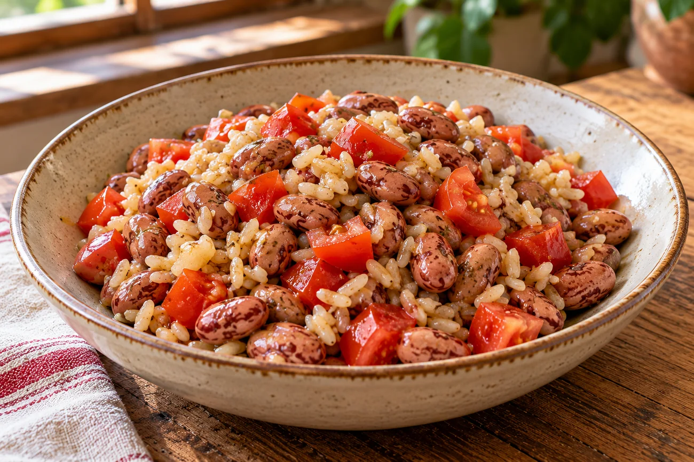

RUBRICA 08 · RICETTA DI ESEMPIO 01 · 23 OTTOBRE 2026
Insalata tiepida di borlotti e riso integrale con pomodori
Una ricetta semplice, originale e di ispirazione mediterranea, con quattro ingredienti misurati. I valori nutrizionali sono stimati da tabelle ufficiali e riguardano esattamente le quantità indicate. Non è una ricetta tradizionale certificata né un piano alimentare individuale.

Per una porzione (metà della ricetta):
36,1 g di carboidrati disponibili
287 kcal
Valori stimati con dati CREA per quantità cotte e scolate; non sono misure di laboratorio sul piatto preparato. Porzioni totali: 2.
Ingredienti per 2 porzioni
- 180 g di borlotti da secchi, già bolliti e scolati (peso cotto, non 180 g da secchi).
- 140 g di riso integrale già bollito e scolato (peso cotto, non 140 g di riso crudo).
- 200 g di pomodori maturi freschi, già puliti, parte edibile.
- 20 g di olio extravergine di oliva, pesati con bilancia.
Acqua per lessare gli ingredienti: non modifica carboidrati o kcal. Non aggiungere ingredienti energetici senza rifare il calcolo. Erbe, sale o altre aggiunte non sono comprese nella stima.
Preparazione
- Se parti dai borlotti secchi, ammollali e cuocili completamente secondo le istruzioni della confezione, senza sale per il riferimento CREA; scolali, poi pesa 180 g di fagioli cotti. In alternativa usa borlotti già lessati: quelli in scatola hanno valori CREA diversi, quindi va ricalcolata la ricetta con l'etichetta o la tabella pertinente.
- Lessa il riso integrale in acqua secondo la confezione e scolalo. Pesa 140 g di riso cotto; conserva per un altro pasto l'eventuale eccedenza.
- Lava i pomodori, elimina le parti non edibili e pesa 200 g; tagliali a pezzi.
- Unisci riso, borlotti e pomodori in una ciotola. Aggiungi esattamente 20 g di olio, mescola e dividi il totale in due porzioni uguali.
Conservazione: se il riso e i fagioli sono già cotti, evita di lasciarli per ore a temperatura ambiente. Raffredda rapidamente gli avanzi, conservali in frigorifero e consumali secondo le normali regole di sicurezza alimentare; se incerto non riutilizzarli.
Calcolo trasparente dei carboidrati e delle calorie
Fonte: banca dati italiana CREA AlimentiNUTrizione. Per ciascun alimento: valore per 100 g × grammi effettivamente impiegati ÷ 100. Somma dei quattro ingredienti, divisa per due. Il termine carboidrati disponibili segue la voce delle tabelle CREA, distinta dalla fibra.
| Ingrediente | Quantità | kcal/100 g | Carboidrati/100 g | kcal per ricetta | Carboidrati per ricetta | Fonte CREA |
|---|---|---|---|---|---|---|
| Borlotti da secchi, bolliti e scolati | 180 g | 106 | 16,4 g | 190,8 | 29,5 g | 004125 |
| Riso integrale, bollito e scolato | 140 g | 113 | 25,5 g | 158,2 | 35,7 g | 000115 |
| Pomodori maturi freschi | 200 g | 23 | 3,5 g | 46,0 | 7,0 g | 006610 |
| Olio extravergine di oliva | 20 g | 899 | 0,0 g | 179,8 | 0,0 g | 009210 |
| Totale ricetta | 2 porzioni | — | — | 574,8 | 72,22 g | Calcolo |
| Una porzione | ½ ricetta | — | — | 287 kcal | 36,1 g | Stima |
La tabella ha valori non arrotondati nei totali, ma in intestazione mostra un risultato leggibile: carboidrati al decimo di grammo, kcal all'unità. La variabilità di varietà, marca, umidità e cottura rende i numeri stimati, non esatti al singolo grammo o kcal.
Cosa succede se cambi ingredienti?
Se aggiungi pane, formaggio, altro olio o una porzione di frutta, devi sommare anche i loro carboidrati e le loro kcal. Se usi fagioli in scatola anziché borlotti ottenuti da secchi, usa la specifica tabella CREA dei borlotti in scatola scolati o l'etichetta del prodotto. Non lasciare in pagina valori invariati dopo aver modificato la ricetta.
Fonti e limiti
Calcolo verificato il 23 ottobre 2026 utilizzando valori per 100 g riportati nelle quattro tabelle CREA collegate direttamente nella tabella. Non si tratta di misurazione nutrizionale del piatto né di ricetta prescritta da un dietista. Non è stata effettuata una validazione clinica indipendente.
Torna alla raccolta di ricette
Vai alla pagina Facebook Per Me per scrivere
Non pubblicare dati sanitari o documenti personali nei commenti pubblici.